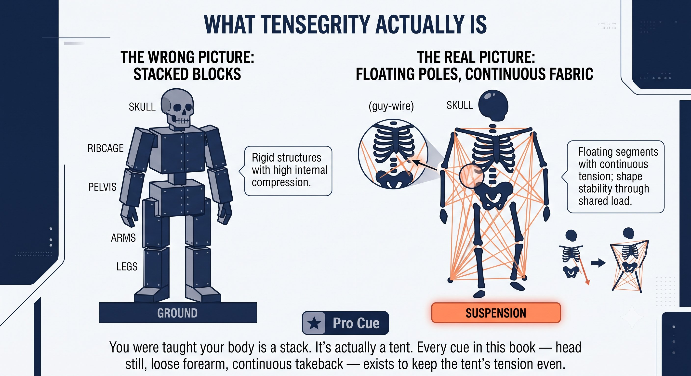

Chapter 11: Tensegrity
(English version of Chapter 11 in the United Tennis Handbook)
CHAPTER 11

Figure 1
TENSEGRITY
The Structural Principle (T)
Your body isn't a stack of blocks. It's a tent. Bones float. Fascia holds.
Tensegrity equals tension plus integrity. Buckminster Fuller's term for a structure that stands through continuous tension, not compression. Bones are the poles. Fascia is the fabric and the guy-wires.
— Henry Pham
What Tensegrity Actually Is
The normal picture of the body is bones stacked on top of each other, with muscles moving them around.
The tensegrity picture is different: your body is a tent. Bones are the poles — they never touch each other, they float. Fascia is the continuous fabric and the guy-wires holding those poles in place under constant tension. Pull one corner of the fabric and the whole tent changes shape.
Figure 11.1: You were taught your body is a stack. It's actually a tent. Every cue in this book — head still, loose forearm, continuous takeback — exists to keep the tent's tension even.

Figure 2
What This Looks Like on Court
When you plant the back foot and turn, you aren't "using leg muscles." You're increasing tension across the entire spiral-line fabric, which compresses the skeleton into a loaded spring.
Figure 11.2: Same body, two states. Continuous tension lines from foot to hand (left) vs. broken at the forearm — a knot the whole tent has to work around (right). A drifting head re-tensions the entire fabric just to keep you upright. Both cost you the free recoil that never arrives.

Figure 3
– A tight forearm breaks tensegrity. It creates a local knot of tension, so force can't travel from foot to hand. Energy leaks out, and the whole stroke feels heavy.
– A stable head keeps tensegrity balanced. The head is a heavy pole — about 5kg. If it drifts, the whole fascial tent has to re-tension itself just to keep you from falling, and that re-tensioning shows up as sudden forearm tightness — the vestibulo-spinal reflex from Chapter 9. A still head means a stable tent, which means a free recoil.
Figure 11.3: Same tent, two faces. Push forehand loads the front — the spiral line. Saber backhand loads the back — the functional back line plus lat. Either way, the release only works if the fabric was continuous going in.

Figure 4
Figure 11.4: Twelve letters, one system. Q → V → ROOT → F → P → T → SSC → 8 → 45° → BRAKE → PULSE → JIN. This is the map for the rest of the book — every chapter from here on is a close-up of one node on this line.
Why the Two Cues Work
The push forehand pressurizes the front of the tent — the spiral line — then lets it snap. The saber backhand pressurizes the back of the tent — the functional back line plus the lat — then lets it snap.
The Principle
Tensegrity isn't anatomy. It's the structural principle that lets fascia transmit force from foot to hand without any leakage along the way.
Tensegrity in the CORE Loop
Tensegrity is the T in Q-V-ROOT-8-45-Impulse-Jin CORE — the structural principle that makes everything else in that chain possible.
The Rule
Tensegrity is the structural logic underneath everything. If it breaks — a tight forearm, a moving head, a collapsed arch — force leaks, and jin has no way to express itself.
The Tensegrity Checklist
BONES FLOAT. FASCIA HOLDS. TENSION STAYS CONTINUOUS. NO KNOTS.
– Feet: tripod active, arches lifted — the base poles are stable.
– Head: still, chin tucked — the heavy pole stays centered and the tent stays balanced.
– Forearm: loose at 3/10 — no local knot, the fabric stays continuous.
– Takeback: continuous tension — no slack anywhere in the fabric.
– No pause at the top — pausing lets elastic energy dissipate as heat within about a second.
– Brake: the front leg and hip stop hard — the fabric pressurizes into an impulse.
– Pulse: a one-inch release travels through the continuous fabric — that release is jin.
– If the forearm burns, that's a knot in the fabric. If the elbow hurts, that's a break in the line.
Where This Leads
This chapter establishes T — tensegrity — as the variable in Q-V-ROOT-8-45-Impulse-Jin CORE. Chapter 12 covers the stretch-shortening cycle as the engine. Chapter 13 covers the figure-8 as the regulator. Chapter 14 covers the 45-degree swing plane as the sweet spot. Chapter 15 covers the brake and the pulse as the release. Chapter 16 covers jin as the result all of this produces.